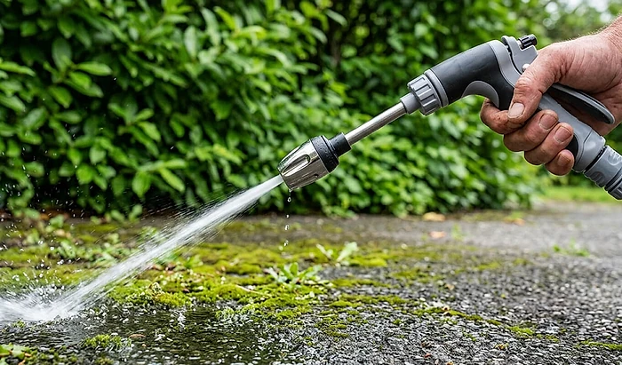
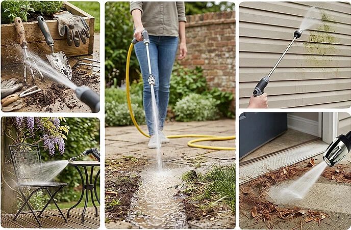

What Is Power Blast Plus And How Does It Work?
Power Blast Plus is a hand-held water jet wand sold online for outdoor cleaning. According to the official website, it attaches to a standard garden hose and uses a "Precision Flow" nozzle with adjustable spray settings to rinse dirt, mud, moss, algae and road grime from cars, patios, driveways, outdoor furniture and garden tools.
The product photos show a pistol-grip trigger handle in black and gray, a long metal extension tube and a metal nozzle head at the end. You connect the handle to your hose, choose a spray setting and squeeze the trigger. The seller says the extension helps you reach panels, siding and other spots with less bending, and that the nozzle can be used with soap and cleaning solutions for tougher grime.
The sales material says the wand gives "more cleaning power than a standard garden hose" without the size and hassle of a pressure washer. It does not give any pressure rating, flow rate or spray pattern details, and its own FAQ answers the question "Is it as powerful as a full-sized pressure washer?" by saying it is designed for practical everyday jobs. In other words, it is not presented as a pressure washer replacement.
A hose wand works with the water pressure your home supply already provides. A narrow nozzle can make the stream feel stronger by concentrating the same water on a smaller area, but it cannot add pressure the way a motorized washer does. Results on moss and stained concrete will depend on your water pressure and how long the buildup has been there. Old, deep stains may still need a scrub brush or a cleaner.
Power Blast Plus Features
According to the official website, Power Blast Plus offers:
Precision Flow nozzle: switches between a concentrated stream and a wider rinse.
Standard hose connection: fits common garden hoses with no assembly.
Extended reach: a long wand for siding, panels and hard-to-reach spots.
Soap compatible: can be used with cleaning solutions.
Lightweight, ergonomic grip: designed to reduce strain.
Metal components: described as built for repeated outdoor use.
The website does not list the length of the wand, the weight, the number of spray patterns, the materials of the handle, the connector type and size, or whether a soap bottle or adapters are included. It also gives no pressure or flow figures, so you cannot compare it with other hose nozzles.
One point is confusing. The promotional article describes placing an "intake line into a bucket of water", and a comment says you can "drop the hose into a bucket", which sounds like a battery-powered washer. The product page and its photos show a wand that connects to a garden hose. Ask customer service which version you will receive before ordering.
Power Blast Plus How To Use
According to the official website, using Power Blast Plus takes three steps: attach it to a standard garden hose and choose a spray setting, direct the spray at the dirt on the surface, then rinse the loosened grime away. The seller suggests a stronger stream for driveways and stubborn buildup and a wider spray for rinsing cars, furniture and more delicate items.
Start with the gentlest setting and test a small, hidden area first, especially on car paint, wood decks, painted siding, window seals and soft stone. A concentrated stream held too close can strip paint, gouge soft wood or force water behind siding and trim.
Never point the spray at people or pets, and keep it away from electrical outlets, light fixtures and outdoor electronics. Wear closed shoes, since wet moss and algae become very slippery while you clean them.
Turn off the water at the tap when you are done and release the pressure in the hose before you disconnect the wand. Drain it and store it indoors in winter so water does not freeze inside the handle. If your area has watering restrictions, check the local rules on washing driveways and cars before you start.
Power Blast Plus – Refund Policy
According to the official website, Power Blast Plus comes with a 30-day money-back guarantee. The seller says that if you are not satisfied, you can return the package within 30 days for a refund, "no questions asked".
The FAQ describes the guarantee in one line: "Simply return your product and we'll give you a refund for 30 days." The sales page does not explain whether the 30 days start on the order date or the delivery date, whether shipping is refunded, who pays for return postage or whether a used wand can be returned. The site's terms of service refer to separate returns, shipping and warranty pages.
The seller says orders ship within 48 business hours from a New Jersey warehouse and that standard delivery takes five to seven days. With a 30-day window, that leaves roughly three weeks to test the wand, so try it as soon as it arrives.
The terms include a mandatory arbitration clause and a class action waiver, with an option to opt out. Keep your order confirmation and the packaging, ask customer service for written return instructions and the return address, ship any return with tracking and keep the receipt until the refund appears on your statement.
Power Blast Plus Customer Reviews
-
Marcus T., IdahoVerified Purchase
"I bought the Power Blast Plus mainly for the moss on my driveway, and I was honestly shocked by how quickly it cleaned everything up."
-
Elena R., FloridaVerified Purchase
"I used to avoid cleaning the patio because dragging out my old machine was such a hassle. This is lighter, faster to set up, and way more practical for everyday use."
-
Darren P., TexasVerified Purchase
"I use it constantly for outdoor furniture, bikes, gardening tools, and rinsing off the car. It's the first cleaning tool I've owned that actually gets used regularly."
Power Blast Plus – Where To Buy
Power Blast Plus is sold through its official website on the buyevergreen.co domain, which hosts a promotional article and an order page. The offer is aimed at customers in the United States and Canada, and the seller says orders ship from a warehouse in New Jersey.
Pistol-grip hose wands with a long metal extension and a jet nozzle are sold under many brand names in hardware stores and on large marketplaces. A look-alike may be very similar, but the 30-day guarantee from the official seller will not apply to it.
The promotional article tells an emotional story about a near fall on a mossy driveway, uses "stock is limited to 3 per household" and countdown messages, and its own disclosure says it is an advertisement and that people in the photos are models. The before and after driveway picture is not tied to a real customer. Take your time, check the order summary, quantity and refund terms, and make sure you are on the official domain.
To ensure you’re getting the authentic product, most users choose to visit the official website.
Is Power Blast Plus A Scam?
Based on the information available, there is no sign that Power Blast Plus is a scam in the sense of a store that takes orders and ships nothing. It is sold through an official website with terms of service, a 30-day money-back guarantee and a stated U.S. warehouse.
On the plus side, a hose wand with an extension and adjustable spray is a simple, low-maintenance tool for rinsing cars, patio furniture, tools and siding, with no motor, cords or fuel.
There are, however, points that deserve attention. No pressure, flow or size figures are given, and the FAQ admits it is not a full pressure washer. The article talks about an intake line in a bucket, while the product page shows a garden hose wand. The company publishes no street address or named owner, the terms mention an unexplained "USS" in one paragraph, and the guarantee is short at 30 days.
Refunds last only 30 days.
If you expect a sturdy hose nozzle for everyday rinsing rather than a pressure washer, and you test it right after delivery, ordering from the official website is a reasonable choice. For heavy, deep-set stains on large driveways, a pressure washer is likely a better fit.
For those who want to verify product details or check current availability, the official Power Blast Plus website remains the safest option.
